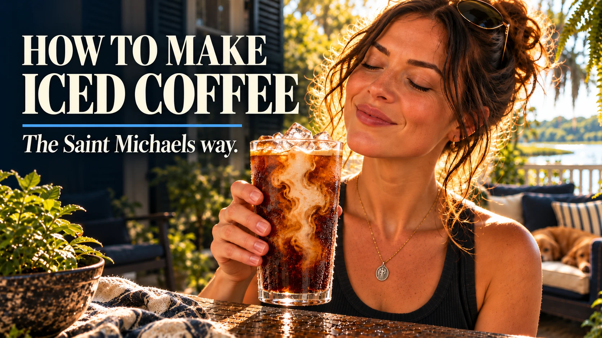
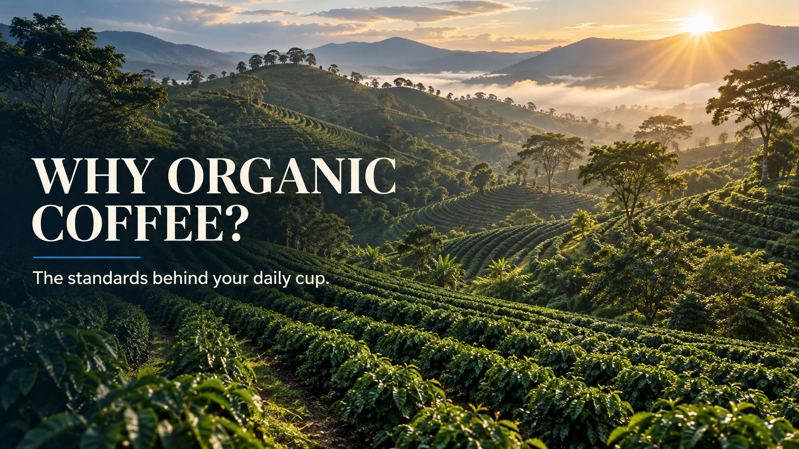
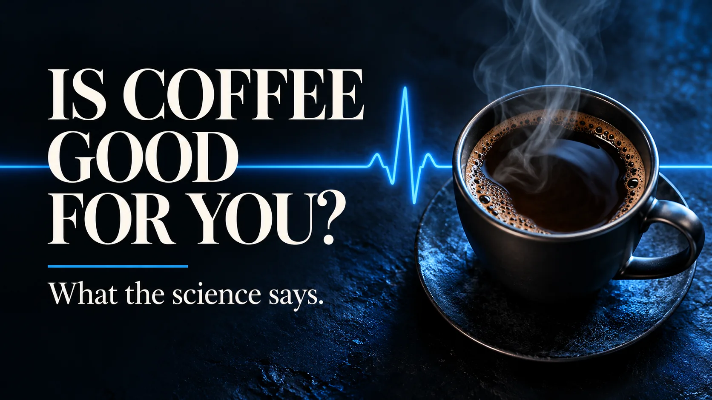

Brew Guides · 5 minute read
How to Make Iced Coffee: The Saint Michaels Way
Bold, cold, and never watered down. Make refreshing flash-brewed iced coffee at home in about five minutes.
Read the article →Practical brew guides, thoughtful answers, and the stories behind your daily cup.

Bold, cold, and never watered down. Make refreshing flash-brewed iced coffee at home in about five minutes.
Read the article →
What organic, Fair Trade and kosher certifications mean—and how to choose your daily cup with confidence.
Read the article →
What large studies say about coffee, liver and heart health, alertness, and how much caffeine is too much.
Read the article →Here I am. Send me.Isaiah 6:8